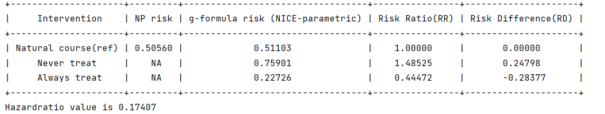

Hazard ratio
For survival outcomes, the pygformula provides the option of calculating the hazard ratio comparing any two interventions of interest. In the presence of competing events, it will return the subdistribution hazard ratio 1. Note that there is an order requirement for the input data structure that it should have the competing event before the outcome event.
Prerequisite: If users want to calculate the hazard ratio with competing event, they needs to install additional “rpy2” package and call the python “cmprsk” package. Please follow the steps below to install:
Install R to set up R environment
Install cmprsk R package in R environment:
install.packages("cmprsk")Install rpy2 package in python environment:
pip install rpy2Install cmprsk package in python environment:
pip install cmprsk
Note
If you encounters the problem of not finding the R environment, you can set up the R path in your environment using the following command in the code:
import os os.environ["R_HOME"] = 'R_HOME'where R_HOME is the R home directory path.
The argument for calculating the hazard ratio:
Arguments |
Description |
|---|---|
intcomp |
(Optional) List of two numbers indicating a pair of interventions to be compared by a hazard ratio. |
Users can specify the two interventions by:
intcomp = [1, 2]
The integer i in ‘‘intcomp’’ denotes the i-th intervention in the user-specified interventions. 0 denotes the natural course intervention.
Running example [code]:
import pygformula
from pygformula import ParametricGformula
from pygformula.parametric_gformula.interventions import static
from pygformula.data import load_basicdata_nocomp
obs_data = load_basicdata_nocomp()
time_name = 't0'
id_name = 'id'
covnames = ['L2', 'A']
covtypes = ['bounded normal', 'binary']
covmodels = ['L2 ~ lag1_A + lag_cumavg1_L2 + L3 + t0',
'A ~ lag1_A + L2 + lag_cumavg1_L2 + L3 + t0']
basecovs = ['L3']
outcome_name = 'Y'
outcome_model = 'Y ~ L2 + A + lag1_A + L3 + t0'
outcome_type = 'survival'
time_points = np.max(np.unique(obs_data[time_name])) + 1
int_descript = ['Never treat', 'Always treat']
g = ParametricGformula(obs_data = obs_data, id_name = id_name, time_name=time_name,
time_points = time_points,
int_descript = int_descript, intcomp=[1, 2],
Intervention1_A = [static, np.zeros(time_points)],
Intervention2_A = [static, np.ones(time_points)],
covnames=covnames, covtypes=covtypes, covmodels=covmodels, basecovs=basecovs,
outcome_name=outcome_name, outcome_model=outcome_model, outcome_type=outcome_type)
g.fit()
Output:

- 1
Fine JP and Gray RJ. A proportional hazards model for the subdistribution of a competing risk. Journal of the American Statistical Association, 94(446):496–509, 1999.